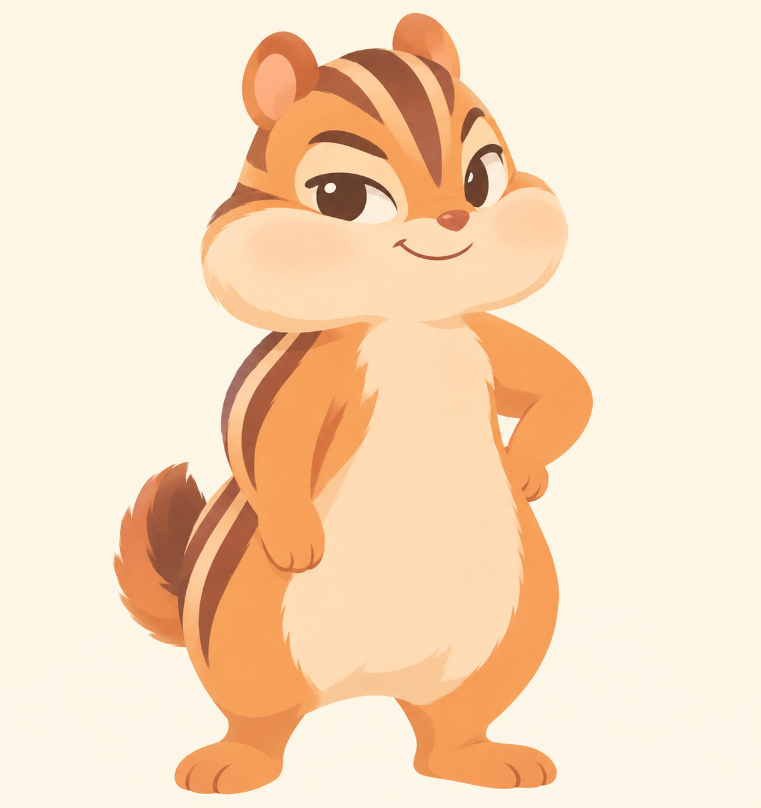
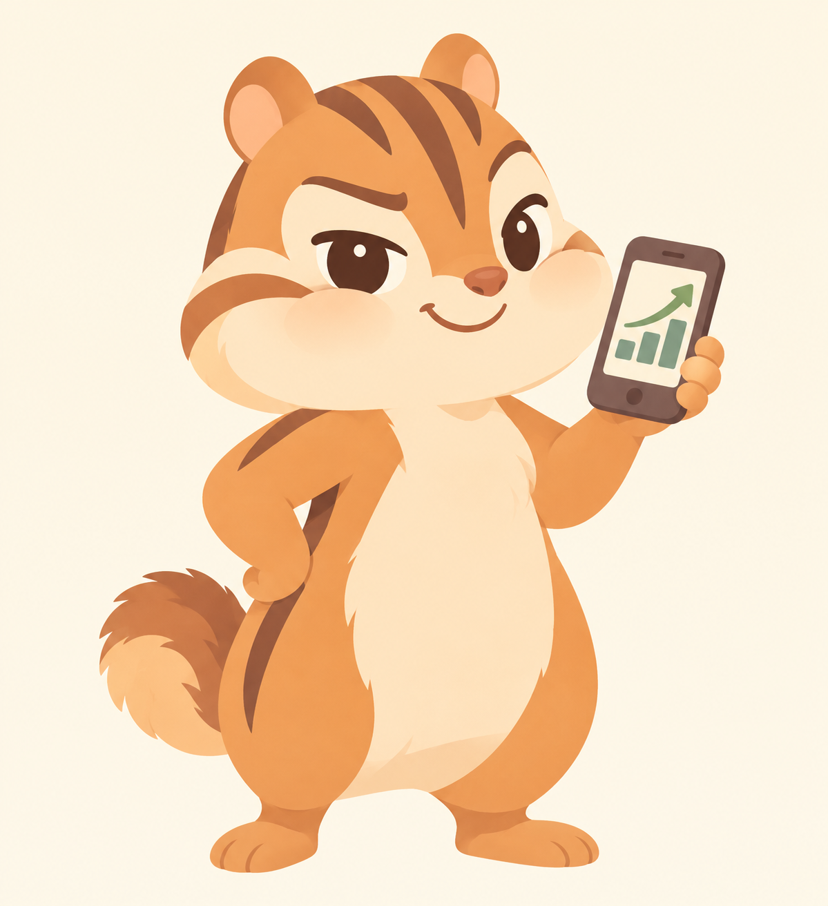
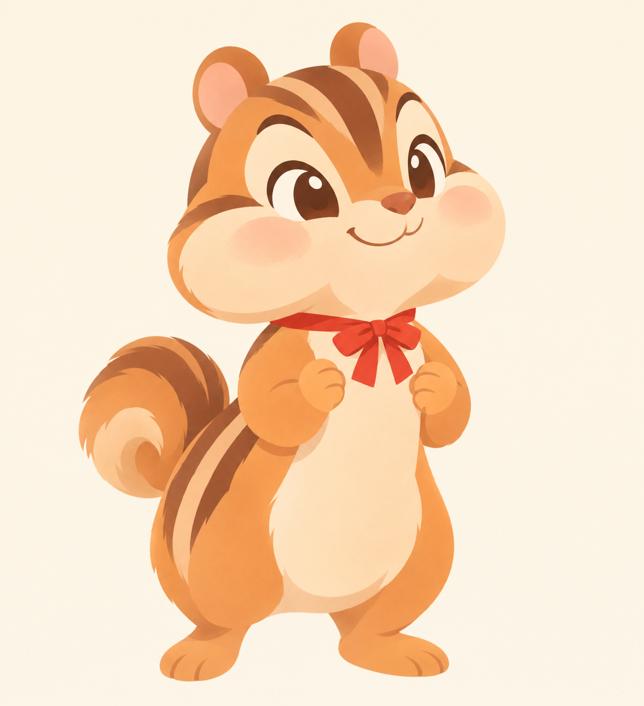
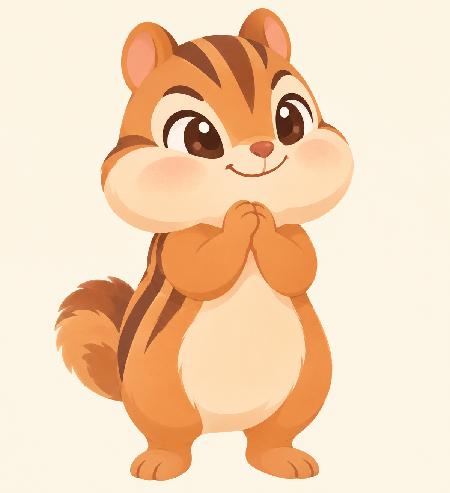

칩멍크 주인공 시안
주인공을 칩멍크로 바꾸었습니다. 등의 줄무늬와 볼주머니가 특징입니다. 같은 중간 자세(서 있기, 최소 소품)로 맞췄습니다.

털과 줄무늬만. 한 손을 허리에 얹은 여유로운 표정.

휴대폰 하나로 차트를 보는 방치형 핵심 행동이 드러남.

포인트 소품은 목끈 하나. 눈썹을 올린 들뜬 표정.

두 손을 가슴에 모은 간절한 자세. 빚과 기대가 함께 보임.
고르실 때 볼 점: 칩멍크의 줄무늬와 볼주머니가 귀엽게 읽히는지, 작은 화면에서 알아보는지, 소품 수준이 맞는지.
하나 고르면 그 자세를 기본형으로 정하고, 표정 5종을 같은 칩멍크 몸으로 다시 뽑겠습니다.